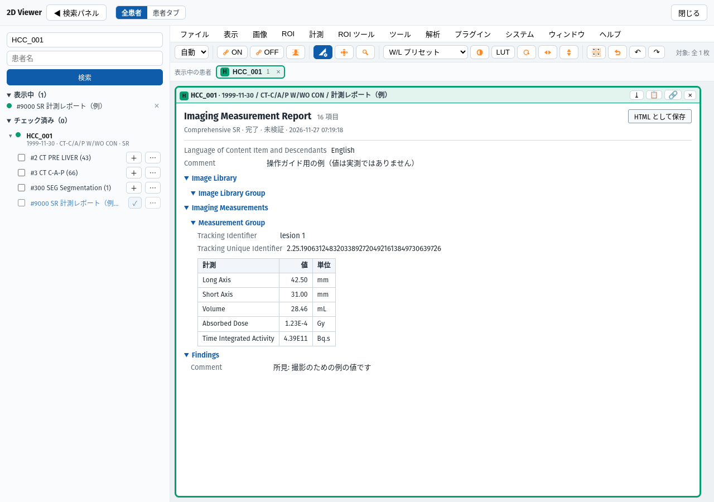
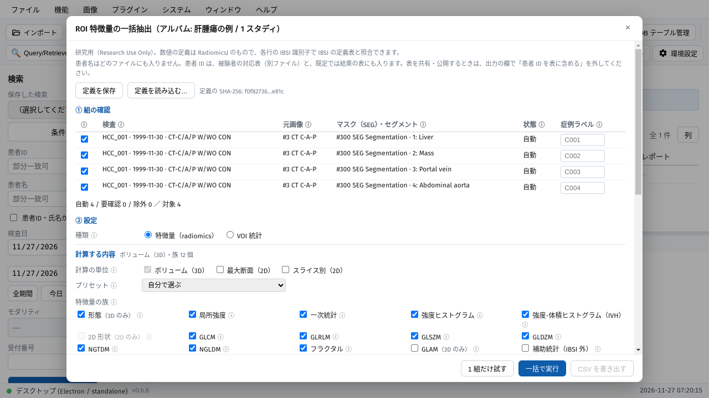
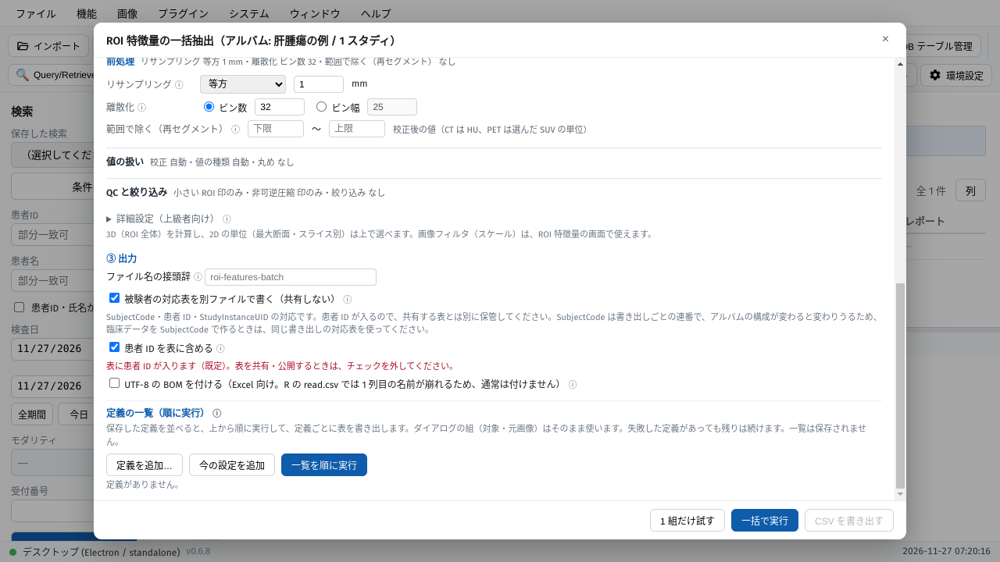

GRAPHY-NEXT v0.6.8 / 操作ガイド
DICOM-SR の表示と書き出し、ROI 特徴量の一括抽出の画面を中心に、v0.6.8 の変更をまとめます。
DICOM-SR の表示検査一覧と 2D ビューアで読む。計測は表で表示
特徴量の一括抽出項目の説明、注意の表示、表記の変更
そのほかの変更日本語の書き出し、別の PC への移行、不具合の修正
01 / シリーズ一覧・2D ビューア ＞ SR

SR を開く: 検査一覧でシリーズを選ぶと下のプレビューに、2D ビューアではタイルに内容が出ます（この画面はタイル）。［HTML として保存］で書き出せます
計測の表: 本体が書き出す数値は、絶対値が 1 以上 100 万未満は小数第 2 位まで、それ以外は指数表記（例: 1.23E-4、4.39E11）です。丸める前の値も SR に残ります
この画面の SR の数値は、撮影のための例の値です（実測ではありません）。
02 / メイン画面 ＞ アルバム ＞ 特徴量を一括抽出…

組の確認: 見出しや列の ⓘ に、意味の説明があります
計算する内容: 「Whole tumour (3D)」の表記は「ボリューム（3D）」になりました。特徴量の族にも ⓘ があります
定義を保存: デスクトップ版では、CSV と設定の書き出しで、フォルダを 1 回選べば全ファイルを書きます。同じ名前があるときは上書きしません

QC と絞り込み: 小さい ROI や非可逆圧縮の画像の扱いを選びます
患者 ID を表に含める: 既定でオンです。表を共有・公開するときは外してください
定義の一覧: 保存した定義を、上から順に実行します
PET が対象で固定ビン幅が初期値のままのときと、元画像のモダリティが混在するときは、実行の前に注意を出します。
03 / そのほか
詳しい変更の一覧は、リリースノート（GitHub の Releases）を参照してください。